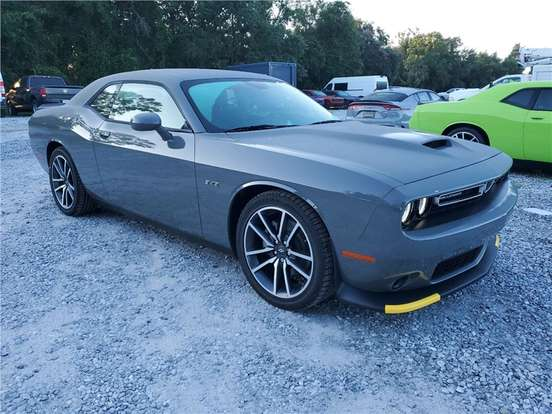

Nossos Veículos
Aqui está a nossa seleção de veículos disponíveis para venda. Para mais informações sobre um veículo específico, entre em contato conosco.
Volkswagen Saveiro 1.6 (Flex) - Ano: 2022 - Preço: R$ 44.000,00 - 179.000 Kms

DODGE CHALLENGER - Ano: 2022 - Preço: R$ 639.900,00
Volkswagen Saveiro Cross 1.6 (Flex) (cab. Estendida) 2014 - Ano: 2014 - Preço: R$ 71.900,00 - KM 107.280